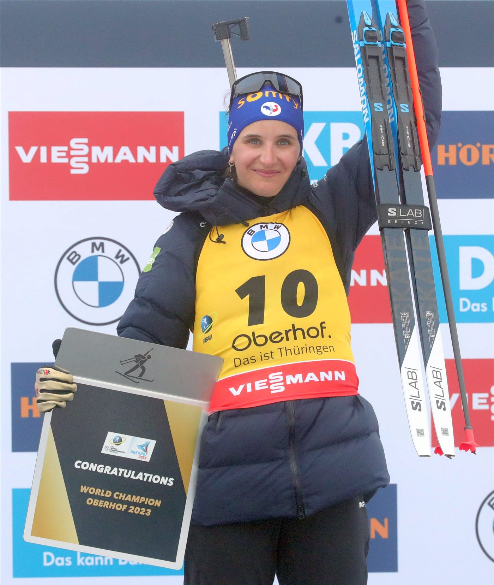
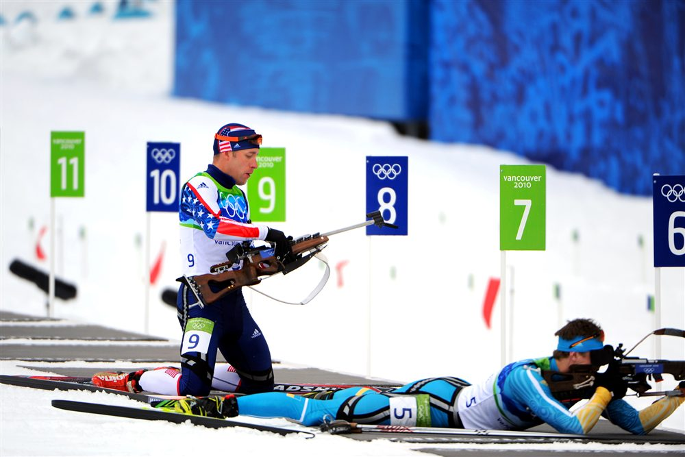
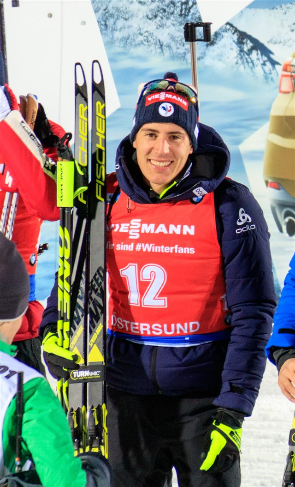
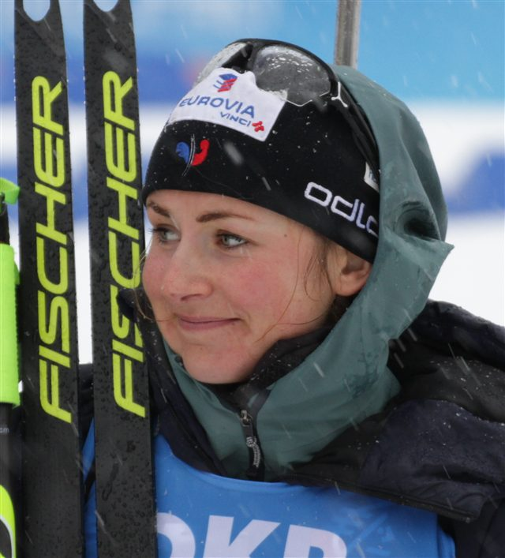
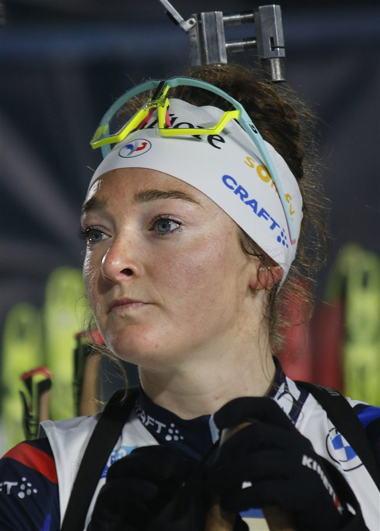
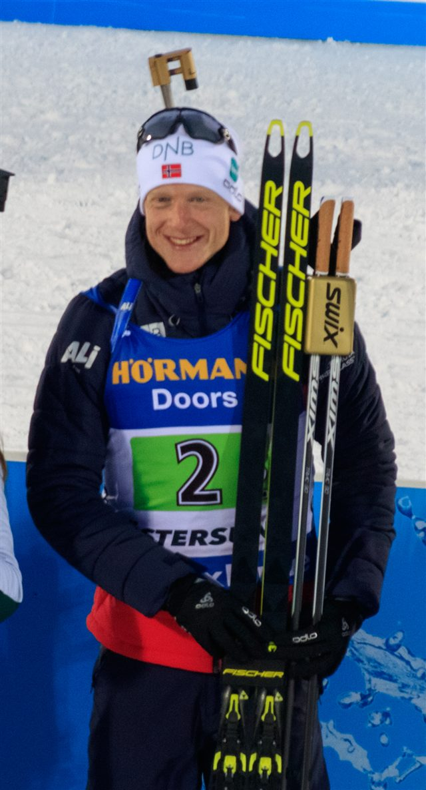
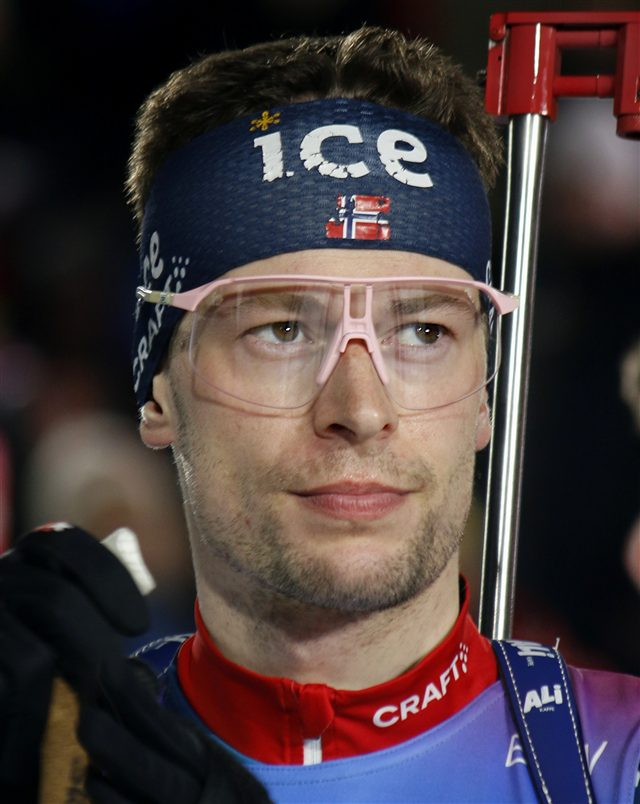

Le ski
Du ski de fond en style libre (skating), sur des boucles entrecoupées de passages au stand de tir.

50 m
Distance de tir
150 m
Anneau de pénalité
20 km
La plus longue épreuve
Le biathlon marie deux disciplines opposées : l'endurance explosive du ski de fond et le sang-froid absolu du tir à la carabine. Les athlètes enchaînent boucles de ski et passages au pas de tir, le cœur à plus de 180 pulsations, pour viser cinq cibles à 50 mètres.
Chaque cible manquée coûte cher : un tour de pénalité de 150 mètres ou une minute ajoutée selon le format. La moindre erreur de tir peut anéantir un effort parfait sur les skis — c'est tout le sel de ce sport.
Légende vivante de la discipline, le Français Martin Fourcade a marqué le biathlon de sept titres olympiques.

Du ski de fond en style libre (skating), sur des boucles entrecoupées de passages au stand de tir.
Cinq cibles à abattre à 50 m, en position couchée puis debout, selon le format de course.
Cible de 45 mm en couché, de 115 mm en debout : la position debout est bien plus exigeante.
Chaque cible manquée impose un tour de pénalité de 150 m — ou une minute ajoutée en individuel.
Une carabine .22 LR d'environ 3,5 kg, portée sur le dos pendant tout l'effort.
Sprint, poursuite, individuel, mass start et relais : chacun a ses règles de tir et de pénalité.
Lieu
Südtirol Arena, Anterselva (Antholz) — Haut-Adige
Capacité
≈ 6 000 places
Accès
Navettes officielles depuis Brunico (Bruneck), à 25 min. Parkings relais fléchés.
Billet
À partir de 35 € (sprint) · 110 € (mass start)
Température
Froid d'altitude — prévoir -5 °C, 1 600 m d'altitude




 Norvège
Norvège
Norvège